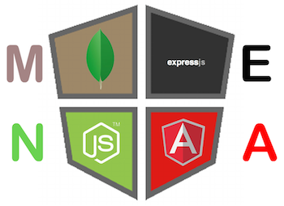

Hi !!!!!
This is Jyoti Verma, From Rajasthan which is also known as the “Land of Maharajas” is the largest state of India, I born in Ajmer city 112 km from Jaipur, I have completed Bachelor in technology from Govt College of Engineering Ajmer in Mechanical.
I pursue my leisure time to gain knowledge about fashion, learning dance steps, recently I have joined art of living to get the concentration habbit.
Worked as a Sr. lecturer in JECRC College of Engineering & Technology Sitapura Jaipur.
6 yrs. Of teaching experience including experience as a counsellor in admission cell.
Career counselling experience in Admission cell.
Manage college events, and cultural evening.
